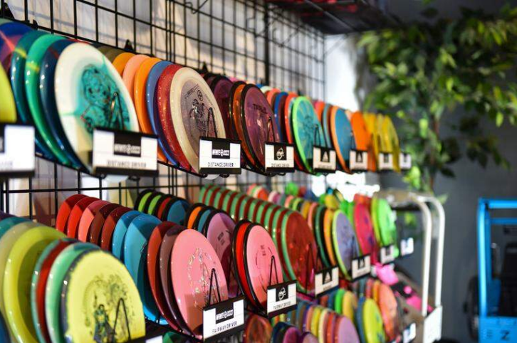
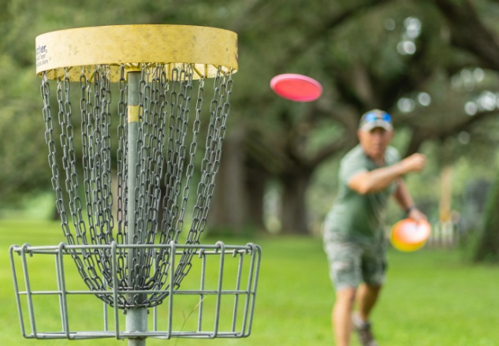
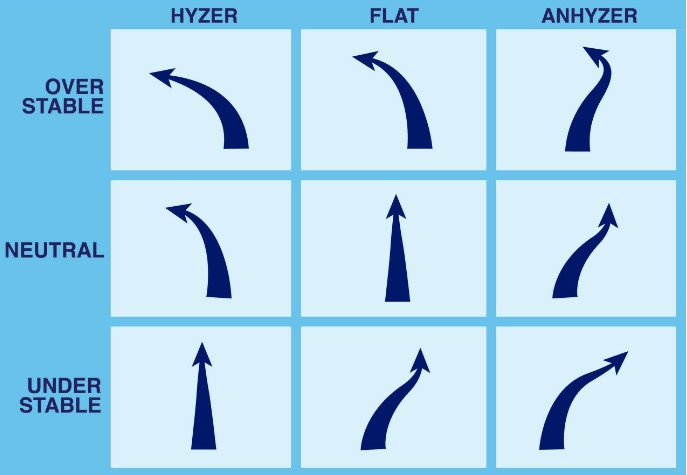

Vi er en vennegjeng som har valgt å satse på nettbutikk for discgolf, vi kommer til å selge disker, arrangere events, sponse spillere og gjøre discgolf mer tilgjengelig for folket.
Navnet ble frisbeelageret da det langt på vei kommer til å være et stort lager hvor vi ser for oss å sende ut disker med post og av å til ha pop-up.
Vi var ikke fornøyd med de nettbutikkene som allerede var på markedet og mener at vi kan gjøre ting bedre.
Vi har også en visjon om å nå ut og sponse lokale unge spillere som ønsker å satse på discgolf.
Vi har planlagt flere lokale eventer for å øke synligheten vår og vise at det er kommet et nytt alternativ på markedet.
Vi ønsker å være en butikk som er i kontakt med kundene sine og miljøet vi opererer i - så vi vil være på lokale eventer som ukgesgolfer etc.

Bilde fra: https://www.bellinghamherald.com/news/business/article285795821.html
Discgolf er en enkel sport som ikke krever mye utstyr. Sporten kan spilles av alle i aldre og er veldig enkel å komme i gang med.
Sporten handler om å kaste frisbeer også kjent som discer fra et utkaststed oppi en metalkurv med kjettinger på færrest mulig kast.

Bilde fra: https://www.maddiscgolf.com/en/blogs/news/que-es-el-disc-golf
I discgolf bruker man forskjellige disker avhengig av hvilket kast man utfører og hvordan man vil at disken skal fly.
Det finnes understabile discer, nøytrale discer og overstabile discer.
For en høyrehåndskaster som kaster backhand vil disse fly til høyre, rett fram eller til venstre.

| Navn | Merke | Type |
|---|---|---|
| Mako 3 | Innova | Midrange |
| Pure | Latitude 64 | Putter |
| Cicada | Discraft | Fairway Driver |
| DD3 | Discmania | Distance Driver |
Er du en lokal spiller som søker sponsor for å kunne satse på discgolf? Ta kontakt her
Ønsker du at vi skal stille opp på din lokale discgolfturnering? Ta kontakt her